Doug Redmond, It's All Just Ones and Zeros
09/28/2009
Introduction:
For base Vault we have 2 concepts that are simple on their own but start to get complex when you mix them together.
The first concept is File Versions. Every time you edit a file, you get a new version. Simple.
The second concept is File Associations. Files can be linked to each other in a parent/child relationship. This allows you to create dependency trees. Again, simple.
Now lets mix the concepts together. A file association is between one version of a file and another. This means that the depencency tree might change for each version of a file.
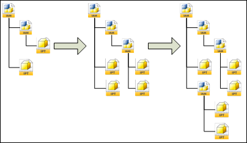
Here is where the confusion starts. You have a big chunk of data and multiple ways of traversing the data. The good news is that the API has some built in tools to help you.
Example:
Let's go through a simple example. First we upload 2 new files, A and B. A is the parent of B. This is what things look like in Vault.
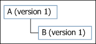
Next we will check out B and check it back in with a new file, C. B is the parent of C. Our view now looks like this.
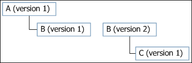
If we start at A and want to get the entire depenency tree, base Vault gives you 2 two types of traversals:
That's all you need to know for base Vault. Now I will go over concepts added by Vault Workgroup.
Vault Workgroup concepts:
Again we have 2 concepts that are simple on their own, but become complex when added to everything else.
First we have Revisions, which is a way to give meaning to a set of versions. For purposes of this article, I'll be using alpha characters for revisions and numeric characters for versions.
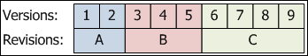
The next concept is release States, which is a way of saying that a file is completed if it is in a certian lifecycle state. At the API level, there is a boolean property on LfCycState which tells if the state is a release state or not. A lifecycle definition usually has only one release state, but it is possible to have 0 or multiple release states. For the purposes of this article, releasesstates will have a darker color than the other states.
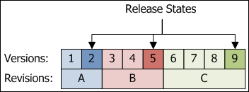
One final note: The Vault clients are set up to update files associations only with the physical file changes. If it's just a change to the Vault data (for example, changing lifecycle state) then the new file version points to the same files that the old version did.
Example:
Let's go over an example. Here we have 2 files, a parent and a child. Both files have gone through revsion and lifecycle changes. The arrows represent direct associations between the file versions.
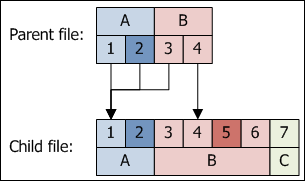
The Vault API provides 5 ways to traverse this data. In all these cases, we are starting at the Parent and asking for the entire dependency tree.
You should be properly confused by now. However there is a rule that will simplify things.
Behind the scenes, revisions only care about 2 versions: the latest version in the revision and the latest released version in the revision. Many times these 2 are the same thing. When thinking in terms of revisions you need to forget about all other versions.
So let's redo the dependency tree for 4 and 5. This time viewing things in terms of revisions.
09/28/2009
Introduction:
For base Vault we have 2 concepts that are simple on their own but start to get complex when you mix them together.
The first concept is File Versions. Every time you edit a file, you get a new version. Simple.
The second concept is File Associations. Files can be linked to each other in a parent/child relationship. This allows you to create dependency trees. Again, simple.
Now lets mix the concepts together. A file association is between one version of a file and another. This means that the depencency tree might change for each version of a file.
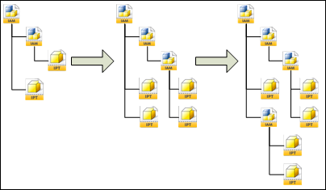
Here is where the confusion starts. You have a big chunk of data and multiple ways of traversing the data. The good news is that the API has some built in tools to help you.
Example:
Let's go through a simple example. First we upload 2 new files, A and B. A is the parent of B. This is what things look like in Vault.
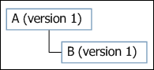
Next we will check out B and check it back in with a new file, C. B is the parent of C. Our view now looks like this.
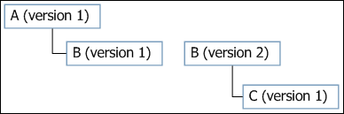
If we start at A and want to get the entire depenency tree, base Vault gives you 2 two types of traversals:
- Snapshot in time: You want to view the tree exactly as it looked when it was uploaded. GetFileAssociationsByIds in the Document Service is that function that will give you this view. If you started with file A and wanted all children, you would get this view:
- Get latest: You want to get the most recent version of all the files involved. GetLatestFileAssociationsByMasterIds in the Document Service is the function that will give you this view. If you started with file A and wanted all children, you would get this view:
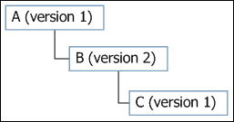
That's all you need to know for base Vault. Now I will go over concepts added by Vault Workgroup.
Vault Workgroup concepts:
Again we have 2 concepts that are simple on their own, but become complex when added to everything else.
First we have Revisions, which is a way to give meaning to a set of versions. For purposes of this article, I'll be using alpha characters for revisions and numeric characters for versions.
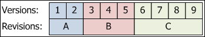
The next concept is release States, which is a way of saying that a file is completed if it is in a certian lifecycle state. At the API level, there is a boolean property on LfCycState which tells if the state is a release state or not. A lifecycle definition usually has only one release state, but it is possible to have 0 or multiple release states. For the purposes of this article, releasesstates will have a darker color than the other states.
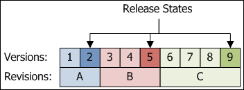
One final note: The Vault clients are set up to update files associations only with the physical file changes. If it's just a change to the Vault data (for example, changing lifecycle state) then the new file version points to the same files that the old version did.
Example:
Let's go over an example. Here we have 2 files, a parent and a child. Both files have gone through revsion and lifecycle changes. The arrows represent direct associations between the file versions.
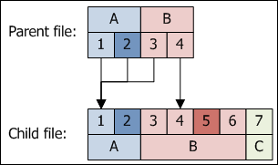
The Vault API provides 5 ways to traverse this data. In all these cases, we are starting at the Parent and asking for the entire dependency tree.
- Get Latest - no release bias
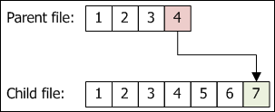
This is useful for CAD engineers who want the latest version of all the files so that they can work on them.
At the API level, you call GetLatestFileAssociationsByMasterIds in the Document Service and pass in 'false' for the releasedBiased parameter.
- Get Latest - release bias
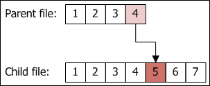
This is useful for people outside the CAD department who are not interested in the 'work in progress' data. They just want to see the latest completed product.
At the API level, you call GetLatestFileAssociationsByMasterIds in the Document Service and pass in 'true' for the releasedBiased parameter.
- Snapshot in Time by Version
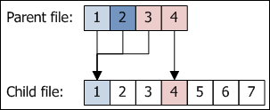
This is useful in cases where you don't care about revisions. The result is what you would get in base Vault, you only get the direct relationships between file versions.
At the API level, you call GetLatestFileAssociationsByMasterIds in the Document Service.
- Snapshot in Time by Revision - no release bias
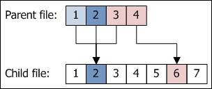
This gives you the latest version within a revision, regardless of the lifecycle state.
At the API level, you call GetRevisionFileAssociationsByIds in the Document Service and pass in 'false' for the releasedBiased parameter.
- Snapshot in Time by Revision - release bias
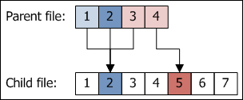
This gives you the latest release version within a revision. If no released version exists, the latest one in the revision is returned.
At tAt the API level, you call GetRevisionFileAssociationsByIds in the Document Service and pass in 'true' for the releasedBiased parameter.
You should be properly confused by now. However there is a rule that will simplify things.
| Rule: When dealing with revisions, think in terms of revisions. Don't think in terms of versions. |
Behind the scenes, revisions only care about 2 versions: the latest version in the revision and the latest released version in the revision. Many times these 2 are the same thing. When thinking in terms of revisions you need to forget about all other versions.
So let's redo the dependency tree for 4 and 5. This time viewing things in terms of revisions.
- Snapshot in Time by Revision - no release bias
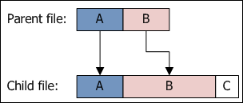
- Snapshot in Time by Revision - release bias
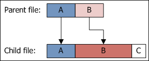